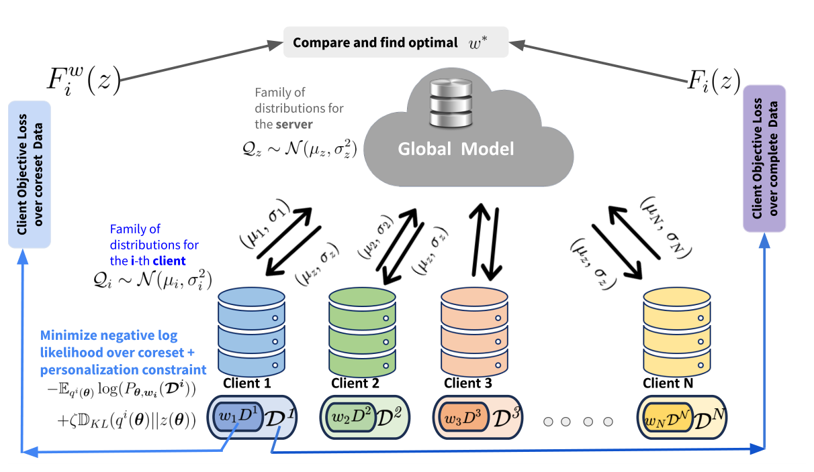
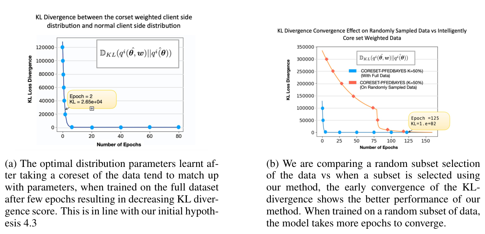
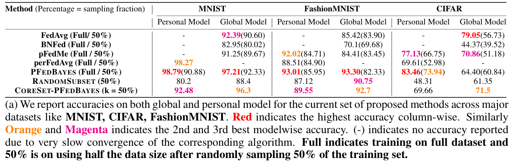
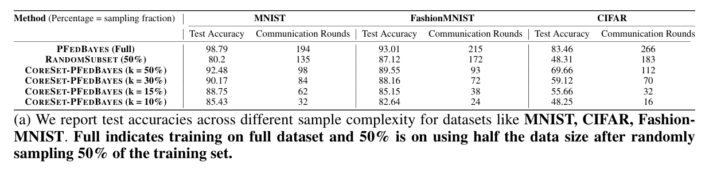
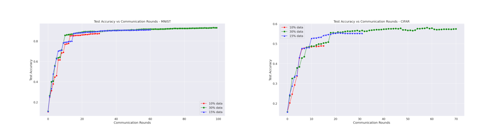
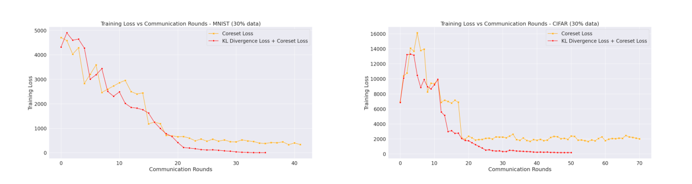
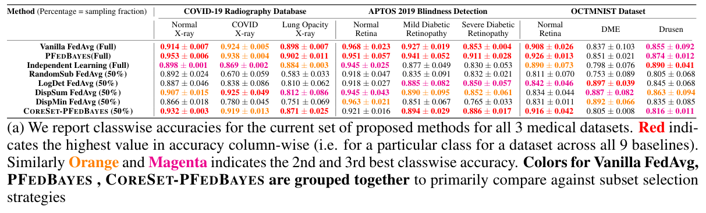

Bayesian Coreset Optimization for Personalized Federated Learning
In federated learning, clients keep their data and send only model updates to a server. A client may hold far more data than it needs for a useful update, and its data may look nothing like other clients'. Training on a random fraction saves compute, but it throws information away unevenly. We show that each client can train on a small, weighted subset of its own data, a coreset, chosen so that its personalised model barely changes.
CoreSet-PFedBayes builds on personalised Bayesian federated learning. Each client picks sparse coreset weights so that the posterior it would learn from the coreset stays close, in KL divergence, to the one it would learn from all its data, while the weighted likelihood stays close to the full likelihood. The generalisation error stays minimax optimal up to log factors in the coreset size. With half the data, the global model is within a point of full-data PFedBayes on MNIST and Fashion-MNIST, and beats it on CIFAR-10.

Personalised Bayesian federated learning
Each of \(N\) clients learns its own Gaussian distribution \(q_i(\theta)\) over network weights, and the server learns a global distribution \(z(\theta)\) that ties them together. A client fits its data \(D_i\) while staying close to the global model:
\[ F_i(z) = \min_{q_i \in \mathcal{Q}_i} \; -\mathbb{E}_{q_i(\theta)} \log P_\theta(D_i) \;+\; \zeta\, \mathrm{KL}\big(q_i(\theta) \,\|\, z(\theta)\big), \]where \(\zeta\) controls how personalised the client is allowed to be. The server picks the global distribution that best supports all the clients on average, \(\min_z \frac{1}{N}\sum_i F_i(z)\).
Ingredient 1: a coreset for each client
A Bayesian coreset gives each of a client's \(n\) examples a weight, most of them zero, so that the weighted log-likelihood behaves like the full one:
\[ \min_{w_i} \; \big\| P_\theta(D_i) - P_{\theta, w_i}(D_i) \big\|^2_{\hat\pi, 2} \quad \text{s.t.} \quad \|w_i\|_0 \le n_k. \]Replacing the full likelihood in the client objective with the weighted one gives the coreset client objective,
\[ F^{w}_i(z) = \min_{q_i \in \mathcal{Q}_i} \; -\mathbb{E}_{q_i(\theta)} \log P_{\theta, w_i}(D_i) \;+\; \zeta\, \mathrm{KL}\big(q_i(\theta) \,\|\, z(\theta)\big). \]Each client has its own weights, so the selection adapts to its own non-IID data. The server aggregates as before.
Ingredient 2: match the posterior, not just the likelihood
What a client really cares about is the model it ends up with. Let \(\hat q_i(\theta)\) be the client's optimal posterior on its full data, and \(\hat q_i(\theta; w)\) its optimal posterior on the coreset, for the same global \(z\). We choose the weights to keep these two close, as well as the likelihoods:
\[ w_i^{*} = \arg\min_{\|w\|_0 \le n_k} \; \mathrm{KL}\big(\hat q_i(\theta; w) \,\|\, \hat q_i(\theta)\big) \;+\; \big\| P_\theta(D_i) - P_{\theta, w}(D_i) \big\|^2_{\hat\pi, 2}. \]The posteriors are Gaussian, so the KL term has a closed form. The problem is sparse and non-convex, and we solve it with accelerated iterative hard thresholding (A-IHT): take a gradient step on the weights, keep the \(n_k\) largest, and repeat with momentum. Choosing the support and the weights together means an example's influence is learned rather than fixed by how often it appears.

The training loop
Each communication round does three things:
- Coreset update. Each client runs A-IHT on its objective to get sparse weights \(w_i\).
- Local training. The client trains its personalised Gaussian posterior on minibatches from the weighted coreset, with the reparameterisation \(\theta = \mu + \log(1 + e^{\rho}) \cdot g\), \(g \sim \mathcal{N}(0, 1)\).
- Aggregation. A random subset of clients uploads its parameters, and the server mixes them into the global model.
What the theory says
For Hölder-smooth targets with smoothness \(\beta\), and client data of intrinsic dimension \(\Lambda\), the generalisation error on the coreset shrinks with the coreset size \(n_k\):
\[ \frac{C_F}{N}\sum_{i=1}^{N} \int \big\| f^{i}_{\theta, w}(X^i) - f^{i}(X^i) \big\|^2_{L_2}\, \hat q_i(\theta; w)\, d\theta \;\le\; C_2\, n_k^{-\frac{2\beta}{2\beta + \Lambda}} \log^{2\delta'}(n_k). \]A matching lower bound shows that this rate is minimax optimal up to the log factor. Compared with training on all \(n\) points, the extra error is bounded by a closed-form function of the coreset weights and size.
Results
Half the data. We use 10 clients with non-IID splits of MNIST, Fashion-MNIST and CIFAR-10, and compare with FedAvg, BNFed, pFedMe, Per-FedAvg and PFedBayes, each on full data and on a random half. With a 50% coreset, our global model reaches 96.3% on MNIST and 92.7% on Fashion-MNIST, within a point of full-data PFedBayes, and 71.5% on CIFAR-10, above full-data PFedBayes's 64.4%. Personal models beat PFedBayes on a random half on MNIST and Fashion-MNIST, but not on CIFAR-10.

Smaller coresets. Shrinking the coreset costs accuracy gradually. On MNIST a 10% coreset still reaches 85.4%, above a random 50% subset (80.2%), and it needs 32 communication rounds against 194 for full-data PFedBayes. Smaller coresets converge in fewer rounds.


The KL term matters. With 30% of the data, the training loss falls lower and more steadily when the posterior-matching KL term is included than with the coreset likelihood loss alone, on both MNIST and CIFAR.

Medical imaging. On three medical datasets split across two clients (COVID-19 radiography, APTOS diabetic retinopathy and OCTMNIST), we compare with diversity-based submodular selection (log-determinant, disparity-sum and disparity-min) followed by FedAvg. On average, our model-centric selection is better on COVID-19 and APTOS, but not on OCTMNIST.

Limitations
- Not better everywhere. Personal models on CIFAR-10 and the OCTMNIST comparison show that a coreset does not beat every alternative in every setting.
- Extra work per client. Each client solves a sparse optimisation for its weights in addition to training.
- Not a privacy guarantee. A coreset changes which examples are used for training. On its own it is not a formal privacy mechanism.
Takeaway
A federated client does not need all of its data to make a good update, but it does need to choose with the model in mind. Picking coreset weights so that the client's posterior barely moves keeps most of the accuracy with a fraction of the data, and cuts the number of communication rounds.
Citation
@inproceedings{chanda2024bayesian,
title = {Bayesian Coreset Optimization for Personalized Federated Learning},
author = {Chanda, Prateek and Modi, Shrey and Ramakrishnan, Ganesh},
booktitle = {International Conference on Learning Representations},
year = {2024}
}